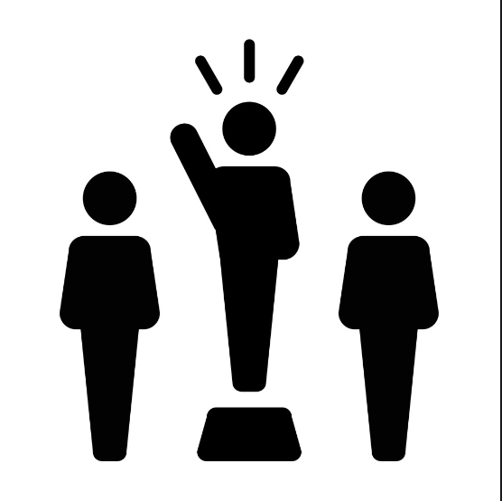

I believe in the habit of doing more than asked for

One way I implement this leadership creed was by putting more effort into things instead of the bare minimum. Such as, how I try to make the most of the time I have. An example is by helping out others on potential stuff they might need help on. I could just submit something, but I try to bring myself to do more, even on the smallest challenges
I believe leadership is action not position
I applied this leadership creed during class for many occasions. Such that, I try to lead my team in group works to talk, but if they need help, I bring myself up to give support. This gave me a view of how being a leader is supposed to be like, rather than just sitting and letting other people do the work. Overall, I hope to improve and bring more of this creed into my life.
I will strive to know myself better and seek self-improvement
After going through a lot of work last year, I have learned many stuff throughout last year. A way I learned was taking account into what I struggled the most, being time management. I now try my best to do what I can through school and have learned to take account into how I should spend my time after class by self studying and pushing myself to my potential.